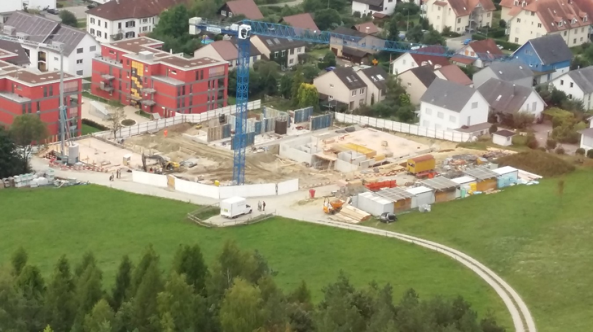
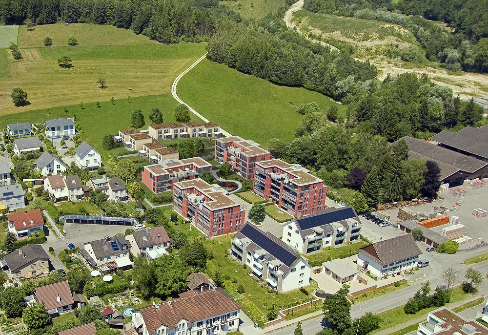
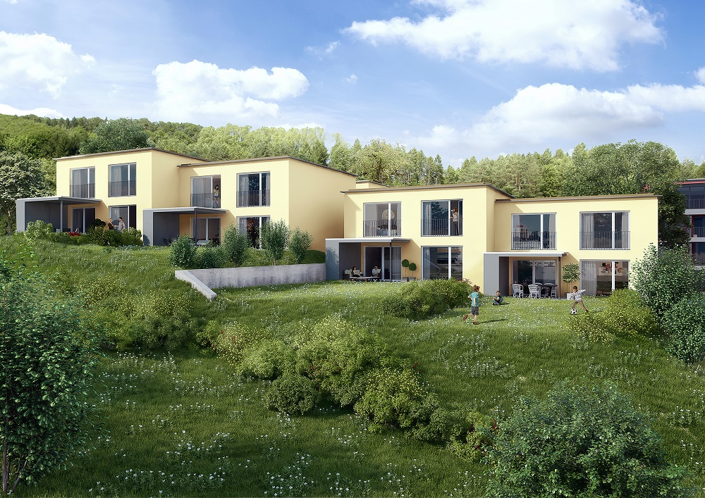
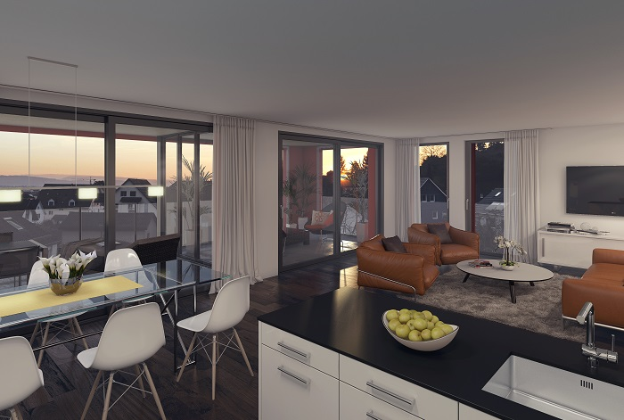

Luftaufnahme des Ziegeleigartens vom Februar 2018.
Neuigkeiten
Vorschau Etappe 3
Der gegenwärtige Baufortschritt (24. August): 

Computergenerierte Gesamtansicht der Überbauung: 

Computergenerierte Ansicht der Einfamilienhäuser: 

Baufortschritt


Innenansicht


Video zu robotergefertigten Mauer
Spiralmauer

Die geschwungene Mauer im Eingangsbereich wurde von einem Roboter gemauert. (Hersteller)
September – Fast fertig

Baufortschritt August


Baufortschritt Juli

Die Balkone haben nun ein Geländer. Die Seitenwände fehlen noch. Das Milchglas ist undurchsichtig, lässt aber Licht herein.

Garagenausfahrt. Das leicht schräge Dach schützt vor Schnee und Regen.

Ziegeleiwäg eins und drei, eingebettet in die Landschaft.
Sichtmauerwerk

Die Abgrenzung zur Strasse wird gemauert.